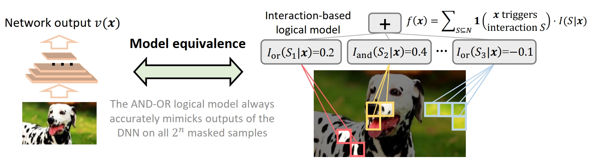

Junpeng Zhang1, Qing Li2, Liang Lin3, Quanshi Zhang1
1 Shanghai Jiao Tong University
2 Beijing Institute for General Artificial Intelligence
3 Sun Yat-Sen University
(† Correspondence)
arXiv preprint arXiv:2405.10262
Qihan Ren1*, Junpeng Zhang1*, Yang Xu2, Yue Xin1 Dongrui Liu3 Quanshi Zhang1†
1Shanghai Jiao Tong University,
2Zhejiang University
3Shanghai Artificial Intelligence Laboratory
(* Equal Contribution, † Correspondence)
NeurIPS 2024
In this study, we discover and theoretically prove the two-phase dynamics of the symbolic inference patterns encoded by a deep neural network (DNN) during the training process. The two-phase dynamics has been universally observed in various DNNs for different tasks, including tabular data/images/text/3D point cloud classification, and the theoretical dynamics well predicts the real dynamics of the DNNs.
The core of this study consists of four aspects:
1. Recent studies have discovered and proven that a DNN’s detailed inference logic on an input sample can be faithfully explained as a small number of interactions. A set of desirable properties have been proven, such as sparsity, universal matching, and transferability across different samples/models, so that they theoretically guarantee that these interactions can be taken as faithful symbolic primitive inference patterns encoded by the DNN.
2. We observe that different DNNs trained on various tasks unanimously learn interactions through two phases:
3. We theoretically prove the analytic two-phase dynamics of interactions. Experiments show that our theory well predicts the real learning dynamics of various DNNs on different tasks.
4. We demonstrate that this two-phase dynamics of interactions explains the change of a DNN’s generalization power throughout training from a new perspective.
A DNN does not treat each input variable (e.g., an image patch or a word) independently when conducting inference, but usually encodes interactions between input variables. There are two types of interactions: the AND interaction and the OR interaction. Given an input sample, the network output can be decomposed into the sum of AND interaction and OR interactions:
How to understand the physical meaning of AND-OR interactions: $I_{\text{and}}(S | \boldsymbol{x})$ measures the numerical effect of the AND relationship encoded by the DNN between input variables in the set $S$. As Fig.2 shows, when the image patches in the set $S_2=\{x_1=\text{nose}, x_2=\text{tongue}, x_3=\text{cheek}\}$ are all present (i.e., not masked), the three patches jointly form a dog-snout pattern and make an effect $I_{\text{and}}(S_2 | \boldsymbol{x})$ to push the network output $v(\boldsymbol{x})$ towards the dog category. Masking any image patch in $S_2$ will deactivate the AND interaction and remove $I_{\text{and}}(S_2 | \boldsymbol{x})$ from $v(\boldsymbol{x})$.
Likewise, $I_{\text{or}}(S | \boldsymbol{x})$ measures the numerical effect of the OR relationship encoded by the DNN between input variables in the set $S$. When one of the patches in $S_1=\{x_4=\text{spotty region1}, x_5=\text{spotty region2}\}$ is present, a speckles pattern is used by the DNN to make an effect $I_{\text{or}}(S_1 | \boldsymbol{x})$ on the network output $v(\boldsymbol{x})$.
Fig. 2: Illustration of AND-OR interactions encoded by a DNN.
The interactions are proven to have several desirable properties:
Sparsity property: A DNN only encodes a small number of salient interactions on a specific sample, while most interactions are noisy patterns with near-zero effects.
Universal matching property: Given an input sample, the network output on a masked input sample can be well mimicked by the effects of specific interactions, no matter how we randomly mask this sample.
Sample-wise/model-wise transferability property: Salient interactions are transferable across different samples in the same category/different models trained for the same task.
Fig. 3: Illustration of the two-phase dynamics of interactions. The last column shows the temporal change of training-testing loss gap, which is roughly aligned with the two phases.
We measure the change in the distribution of salient interactions over different orders (complexities) during training, and find that the two-phase dynamics of interactions widely exist on different DNNs trained on various datasets (shown in Fig.3):
In this way, the interaction encoded by the DNN at an intermediate point during training can be formulated as the solution to the following objective:
Analytical solution. We find that the theoretical interaction distribution (derived from ) could well predict the real distribution at different training epochs.
Fig. 4: Comparison between the theoretical distribution of interaction strength and the real distribution of interaction strength in the second phase.
We find that two-phase dynamics of interactions explains how a DNN’s generalization power changes throughout training, from the perspective of symbolic inference patterns encoded by the DNN. We demonstrate this claim from two aspects.
Fig. 5: The Jaccard similarity between interactions extracted from training samples and interactions extracted from testing samples decreases significantly as the order grows.
Fig. 6: The strength of high-order interactions on OOD samples is significantly greater than that on normal samples.
Shortly after entering the second phase, the loss gap increases significantly, which is a sign of learning over-fitted features (see last column of Fig. 3).
[1] Qihan Ren, Huiqi Deng, Yunuo Chen, Siyu Lou, and Quanshi Zhang.Bayesian Neural Networks Tend to Ignore Complex and Sensitive Concepts. ICML, 2023
@article{zhang2024two,
title={Two-Phase Dynamics of Interactions Explains the Starting Point of a DNN Learning Over-Fitted Features},
author={Zhang, Junpeng and Li, Qing and Lin, Liang and Zhang, Quanshi},
journal={arXiv preprint arXiv:2405.10262},
year={2024}
}
@inproceedings{
ren2024towards,
title={Towards the Dynamics of a {DNN} Learning Symbolic Interactions},
author={Ren, Qihan and Zhang, Junpeng and Xu, Yang and Xin, Yue and Liu, Dongrui and Zhang, Quanshi},
booktitle={The Thirty-eighth Annual Conference on Neural Information Processing Systems},
year={2024}
}